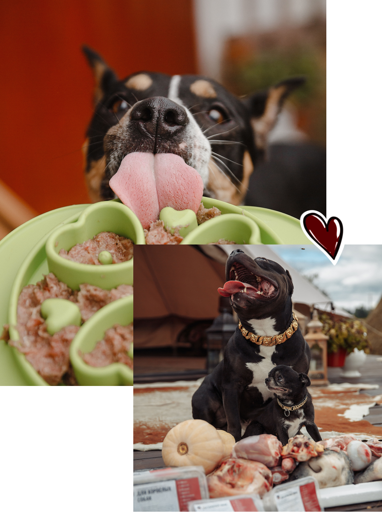

<section class="care">
	<div class="container">
		<div class="care__content">
			<div class="care__content-img">
				
			</div>
			<div class="care__content-text">
				<div class="care__title">С заботой и любовь от Zooov
				</div>
				<p>Мы сами владельцы собак и знаем, как важно правильное и качественное питание для долгой и счастливой жизни вашего питомца. Для нас ZOOOV это не просто бизнес, это наш вклад в повышение качества жизни всех собак.
				</p>

				<p>Мы знаем, как правильно подобрать и переработать мясо, субпродукты, овощи и фрукты, чтобы питание вашего питомца было максимально сбалансированным и полезным.
				</p>

					<p>Обычного сырого мяса из магазина будет недостаточно для полноценного питания собаки. ZOOOV — экономия времени, вам не придется искать необходимые составляющие для рациона.
					</p>

					<p>Мы сами отбираем мясо, кости, легкие, печень и другие говяжьи, кроличьи и птичьи субпродукты у проверенных поставщиков. Закупаем органические овощи и используем разнообразные масла, такие как конопляное и льняное.
					</p>
					
					<p>ZOOOV — это удобно, мы доставляем готовый рацион на две недели уже смешанным, расфасованным и упакованным в порционные лотки,готовыми к заморозке. За два часа до кормления достаточно переместить контейнер из морозилки в холодильник для ПРАВИЛЬНОЙ разморозки.
				</p>
			</div>
		</div>
	</div>
</section>